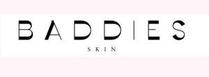

Trade Mark Journal No.2026/012 20 March 2026
UK00004350287 6 March 2026 (3)

- Class 3
- Beauty serums; Beauty creams; Beauty lotions; Beauty care cosmetics; Beauty masks; Masks (Beauty -); Beauty soap; Beauty milk; Beauty gels; Beauty milks; Facial beauty masks; Beauty creams for body care; Beauty balm creams; Beauty preparations for the hair; Beauty care preparations; Distilled oils for beauty care; Beauty tonics for application to the face; Beauty masks for hands; Beauty serums with anti-ageing properties; Beauty tonics for application to the body; Natural cosmetics; Body cleaning and beauty care preparations; Non-medicated beauty preparations; Natural makeup; Skincare cosmetics; Natural perfumery; Body care cosmetics; Body and facial creams [cosmetics]; Hair cosmetics; Cosmetics; Skin care cosmetics; Colour cosmetics; Facial creams [cosmetics]; Colour cosmetics for the skin; Hair care creams [for cosmetic use]; Anti-aging moisturizers used as cosmetics; Cosmetic products in the form of aerosols for skincare; Colour cosmetics for the eyes; Body creams [cosmetics]; Cosmetics for eye-lashes; Hair care lotions [for cosmetic use]; Natural oils for cosmetic purposes; Facial makeup; Cosmetic products in the form of aerosols for skin care; Organic cosmetics; Cosmetics for suntanning; Decorative cosmetics; Eye cosmetics; Sun care lotions [for cosmetic use]; Massage oil; Cuticle oil; Pine oil; Hair oil; Cleansing oil; Shaving oil; Bath oil; Body oil; Beard oil; Baby oil; Facial oil; Combing oil; Peppermint oil [perfumery]; Oil of turpentine for degreasing; Exfoliants for the cleansing of the skin; Exfoliating body scrub; Exfoliant creams; Exfoliating creams; Gel scrub; Microdermabrasion polish; Skin cleansing lotion; Exfoliants; Exfoliating scrubs for the body; Cleansing mousse; Exfoliating scrubs for the face; Cleansing lotions; Facial massage oils; Skin cleansing foams; Moisturising skin lotions [cosmetic]; Exfoliating scrubs for the hands; Skin cleansing cream; Mattifying gel cream; Massage oils and lotions; Skin hydrators; Skin cleansers; Exfoliating scrubs for cosmetic purposes; Massage waxes; Facial cleansers; Cosmetic massage creams; Cleansing balm; Skin moisturizer masks; Skin moisturizer; Cleansing creams; Moisturising body lotion [cosmetic]; Skin cleansing cream [non-medicated]; Facial lotion; Exfoliating scrubs for the feet; Moisturising skin creams [cosmetic]; Exfoliants for the care of the skin; After-sun lotions; Skin moisturiser; Anti-ageing moisturiser; Skin lotion; Facial moisturizers; Moisturizing creams; Softening cleanser [cosmetic]; Massage oils; Toning spritz; Cleansing creams [cosmetic]; Skin cleansers [cosmetic]; Wipes impregnated with a skin cleanser; Moisturizing body lotions; Cloths impregnated with a skin cleanser; Moisturising gels [cosmetic]; Skin texturizers; After-shave gel; Cleansing gels; Facial cleansers [cosmetic]; After-sun lotions [for cosmetic use]; Oils for moisturising the skin after sunbathing; Moisturising creams; Facial moisturisers [cosmetic]; Skin moisturizers; Skin cleansers [non-medicated]; Moisturising creams, lotions and gels; Skin moisturisers; Hydrating masks; Moisturiser; Facial scrubs; Epilating waxes; Lavender gel; Facial lotions; Cleansing cream; After-sun creams; Facial cleansing grains; Non-medicated cleansing creams; Bath gel; After-sun oils [cosmetics]; Aromatherapy lotions; Pre-shave creams; Aromatherapy creams; Bath lotion; Facial scrubs [cosmetic]; Skin lotions; Lotions for the skin; Scented body lotions and creams; Cuticle softeners; Cleansing masks; Hair moisturising conditioners; Aftershave moisturising cream; Depilatory lotions; Skin hydrators being injectable dermal fillers; Hydrating creams for cosmetic use; Skin emollients; Cleansing foam; Perfumed oils for skin care; Skin clarifiers; Anti-aging moisturizers; Hair-washing powder; Moisturizing preparations for the skin; Hair lotion; Scented body creams; Non-medicated skin serums; Smoothing emulsions for the skin; Scented body lotions; Skin moisturizers used as cosmetics; Hair moisturisers; Cosmetic facial lotions; Facial lotions [cosmetic]; Massage creams, not medicated; Creams for tanning the skin; Hair moisturizers; Body massage oils; Cuticle oils; Tissues impregnated with a skin cleanser; After-shave lotions; Skin hydrators for cosmetic purposes; Synthetic musk; Cedarwood perfumery; Perfume; Scents; Agarwood [incense]; Aromatics for perfumes; Scented wood; Aromatics for fragrances; Oils for perfumes and scents; Vanilla perfumery; Fragrance emitting wicks for room fragrance; Perfumes; Eau de cologne [cologne water]; Cologne; Fragrance sachets; Perfume oils; Fragrances; Perfumed potpourris; Perfumed powder; Perfume water; Scented water for fragrancing; Air fragrance reed diffusers; Scented linen sprays; Scented pine cones; Perfumery and fragrances; Liquid perfumes; Potpourris [fragrances]; Scented oils; Perfumed sachets; Colognes; Scented bathing salts; Scented water; Synthetic vanillin [perfumery]; Perfumed water; Perfumed soap; Scented sachets; Odour fresheners for animals; Perfumed soaps; Eau de Cologne; Eau de cologne; Cologne water; Incense; Scented soaps; Scented linen water; Eau de colognes; Eau de parfum; Scented body spray; Perfumed creams; Extracts of flowers [perfumes]; Flowers (Extracts of -) [perfumes]; Extracts of flowers being perfumes; Incense spray; Cushions impregnated with perfumed substances; Aromatic potpourris; Fragrance sachets for eye pillows; Perfumes for cardboard; Solid perfumes; Feminine deodorant sprays; Body fragrances; Fragrant sachets; Perfumed powders; Cushions impregnated with fragrant substances; Eaux de Cologne; Eaux de cologne; Extracts of perfumes; Natural oils for perfumes; Pomanders [aromatic substances]; Aftershave milk; Incense sachets; Fragrance preparations; Aftershave balm; Scented wax melts; Air fragrance preparations; Hair balsam; Body deodorants [perfumery]; Perfumed tissues; Aftershave lotions; Aftershave; Ethereal oils for fragrancing; Aftershave balms; Room perfume sprays; Perfumed powder [for cosmetic use]; Synthetic perfumery; Body butter; Cocoa butter for cosmetic purposes; Moisturizing milk; Hand and body butter; Facial butters; Almond soaps; Almond soap; Body butters; Cream soaps; Body cream soap; Body and facial butters; Cuticle cream; Aloe soap; After-sun milk; Moisture body lotion; Aloe soaps; Horse oil cream for skin care; Skin cream; Sugar soap; Blemish balm creams; After-sun milk [cosmetics]; Cosmetic sun milk lotions; Non-medicated balm for hair.
Aicha SAMASSI